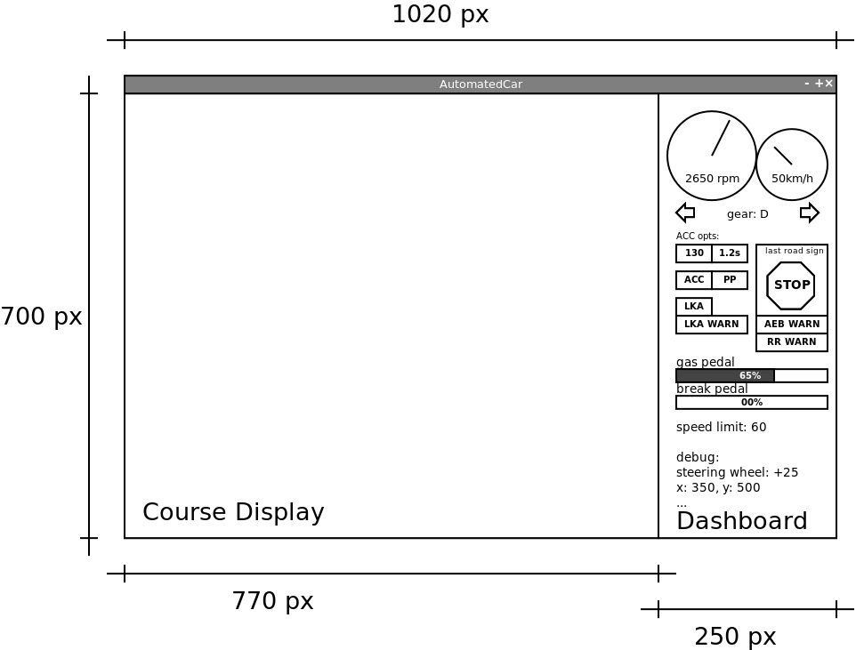
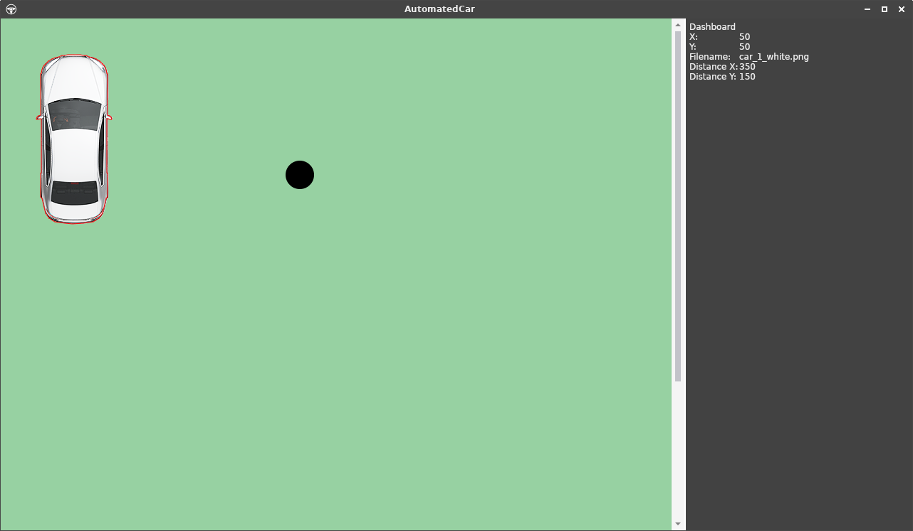

Referencia architektúra
A repó található kezdeti kódot (skeleton) egységes alapot képez a félév során megvalósítandó szoftver számára, azonban nem kíván tökéletes és teljes megoldást biztosítani a feladat egyetlen elemére sem, mindösszesen példaként szolgál a következőkre:
- projekt struktúra
- grafikus felület létrehozása
- WPF keretrendszerrel
- Avalonia keretrendszerrel
- világmodell benépesítése
- vezérelt autó példányosítása és kiválasztása
- képfájl betöltése projektkönyvtárból
- világobjektumok rajzolása MVVM rendszerben
- vezérelt autó állapotának megjelenítése a műszerfalon
- ütemező használata
- billentyű lenyomás és felengedés esemény kezelése
- szenzor objektum létrehozása
- adatcsomag küldése és fogadása a Virtual Function Bus-on keresztül
Átfogó kép
A teljes szoftver moduljai 12 user story-ra vannak bontva. Az egyes modulok a teljes szoftver egy-egy komponensét valósítják meg. A legtöbb ilyen komponens a vezérelt autón belül kap majd helyet. Azonban vannak olyan komponensek (irányítás és megjelenítés), amelyek nem csak az autón belül, de azon kívül, a keretszoftverben működnek.

A billentyűzet események kezelése értelemszerűen a szoftverban történik, amelyet aztán a szimulált autó kezelőszerveire (gáz- és fékpedál, kormány) kell leképezni. A megjelenítésnek pedig értelemszerűen a teljes világot, de legalábbis az autó egy környezetét kell, hogy kirajzolnia.
Virtual Function Bus
A VirtualFunctionBus (VFB) egy kommunikációs megoldás az AutomatedCar komponensei (SystemComponent) számára. A komponensek feliratkoznak a buszra és a feliratkozás sorrendjében ciklikusan meghívásra kerül a Process() metódusok.
Ebből következik, hogy a feliratkozást az ábrán látható sorrendben kell megtenni, mivel az adatáramlásnak ilyen irányultsága van. Az ábra a kód kezdeti állapotát szemlélteti, a munka során további modulok (szenzorok, vezetés támogató rendszerek) is csatlakoznak majd. Valamint a hajtáslánc és a kormányzás modult nem kötelező ennyire élesen szétválasztani.

Minden adatközlő modulnak létre kell hoznia egy-egy csomag (packet) típust (és vele párhuzamosan egy az olvasást biztosító interfészt), amely tartalmazza azokat az információkat amelyeket továbbítania kell. Például az input modul a pedál és kormány állásokat. A hajtáslánc a következő, kiolvassa a pedál és váltó állást, számol vele, majd visszaírja a saját csomagjába motor fordulatszámát és az autó sebességét, stb. Ezekre legközelebb a kormányzás modulnak lesz szüksége, az kiolvassa ugyanúgy mint az input modul kormányállás értékét, számol vele, majd visszaírja a autó adott iterációra vonatkozó elmozdulását.
Használata általánosan
- Create a new package (e.g. SteeringAnglePacket)
- Create a new interface for it (e.g. IReadonlySteeringAnglePacket)
- Add reference to the owner component (e.g. SteeringSystem)
- Add the interface reference to the VirtualFunctionBus
- In the loop method of the writing componenet set the payload value of the packet
- In the loop method of the reading compontent read the payload of the packet
Konkrét példán keresztül: DummySensor
A DummySensor egy rendkívül primitív „szenzor”: egyetlen feladata, hogy kiszámolja az egocar ás a Circle objektum közötti távolságot. Pontosabban az egocar és a kör referenciapont X, Y koordinátáinak különbségét. Azonban ez is teljes mértékben képes bemutatni a szenzorok működését és a buszon keresztüli adatcserét.
A példa szempontjából releváns komponensek viszonyát alábbi ábra szemlélteti.

A World singleton osztály tartalmaz minden WorldObject-et és tartalmaz referenciát a vezérelt autóra, amely közvetetten szintén WorldObject, csakúgy mint a Circle. Az AutomatedCar tartalmazza a VirtualFunctionBus-t, mivel ez az autó komponenseinek kommunikációs csatornáját valósítja meg. Szintén az AutomatedCar tartalmazza a szenzorokat, jelen esetben a DummySensor-t.
Ahhoz, hogy a szenzorok (vagy egyéb komponensek mint a hajtáslánc például) adatot cserélhessenek fel kell iratkozniuk a VFB-ra. Miután a feliratkozás megtörtént, a VFB minden ciklusában meghívja a Porcess() metódusát. A DummySensor esetében ez a metódus elkéri a világtól a kör objektumot, kiszámolja a vezérelt autó és a kör távolságát, majd ezt a távolságot eltárolja a DummyPacket objektumban (amely egy IReadOnlyDummyPacket típuson keresztül a VFB-ban van tárolva).
A dummyPacket referenciája eltárolásra került a VirtualFunctionBusban, amely referenciáját a a szenzor konstruktorának biztosítani kell. Ehhez előzetesen létre kell hozni egy IReadOnlyDummyPacket típusú változót a VFB-ban.
Miután a DummyPacket megvalósítja az IReadOnlyDummyPacket interfészt, a VFB-ban az utóbbi típus tárolására szolgáló változó kerül deklarálásra. Ezzel biztosítható, hogy az adott értéket csak a csomag tulajdonosa (jelen esetben a DummySensor) tudja majd írni, de minden más komponens olvashatja a VFB-on keresztül.

Ez lejátszódik minden iterációban, így a kör és a vezérelt autó mindenkori helyzete szerinti távolságot fogja tartalmazni a DummyPacket.
Osztálydiagramok


Megjelenítés
Az elkészítendő szoftver felhasználói felületének az alábbi vázlat felépítését kell követnie.

A programablak bal oldalán a virtuális világ egy szeletét látjuk ezért felel a vizualizációs modul. A megjelenítés középpontja az mindenkor vezérelt autó (egocar). A világ minden eleméhez tartozik egy képfájl, ezen elemek megfelelő transzformációk (forgatás, skálázás) végrehajtása után kirajzolásra kerülne a CourseDisplayre.
Továbbá erre a részre kerülnek kirajzolásra a debuggoláshoz és teszteléshez használandó segédobjektumok opcionálisan bekapcsolható megjelenítése. Ide tartozik a szenzorok látómezeje, a világobjektumok „poligon váza”, valamint utóbbiak eseményre történő kiemelésének lehetősége.
A jobb oldalon a műszerfal található. A műszerfalon nincsenek vezérlőelemek, csak megjelenítés. Az összes kapcsoló a billentyűzettel állítható, a grafikus elemeknek nem kell pl. egérrel kapcsolhatónak lenniük.
A fordulatszám és a sebesség legyen egy analóg órával reprezentálva; a kormány elforgatás, a gáz- és fékpedál állása progressbar-okkal szemléltethető. Az irányjelző visszajelzője és a vezetéstámogató funkciók visszajelzői lámpaszerűek, a sebességváltó állása, és a debug értékek pl. kocsi pozíciója (x, y koordináta) lehet szöveges. A buszon közölt „utoljára látott tábla” képét ki kell tudni rajzolni (a képek rendelkezésre állnak). Legyen elkülönítve a nincs tábla eset is.
A megjelenítéshez tetszőleges grafikus keretrendszer választható, alább a skeleton két változatban kerül bemutatásra.
WPF alapú megjelenítés
Az ismert WPF alapú implementáció, amely egyenértékű a később taglalt Avalonia alapú megoldással. Mindkettő XAML alapú, MVVM modellű keretrendszer, előbbi Windows-os, utóbbi platform független.
A főablak két UserControlt tartalmaz, az egyik a CourseDisplay, a másik a Dashboard, azért lettek szétválasztva, hogy a két komponensen dolgozó csapatoknak ne kelljen egymás munkájába nyúlkálniuk.
Például, alább látható a műszerfal, amely egy AutomatedCar objektum megjelenítését végzi. Egészen pontosan a World-ben tárolt controlledCar objektumét. A ControlledCar tulajdonság egy referencia az éppen vezérelt autóra (elvben lehetne a világban több AutomatedCar példány és ezek között váltogathatnánk is. Ilyen esetben a ControlledCar mindeg az aktuálisra mutat, amelyet meg akarunk jeleníteni). A DashboardView a DashboardViewModel-en keresztül a controlledCar-hoz van kötve.
<ContentControl Name="Dashboard" Content="{Binding World.ControlledCar, Mode=OneWay}" >
<ContentControl.ContentTemplate>
<DataTemplate DataType="{x:Type models:AutomatedCar}">
<StackPanel>
...
</StackPanel>
</DataTemplate>
</ContentControl.ContentTemplate>
</ContentControl>
A példakód ezt biztosítja, a feladat a konkrét visszajelzőkhöz megfelelő felületi elemek definiálása.
CourseDisplay
A teljes CourseDisplay lényegében egy ItemsControl, amely a világ WorldObjects tulajdonságához van kötve. Ezen belül található egy Canvas, amire a rajzolás történik, valamint egy DataTemplate, amely azt írja le, hogy egy WorldObject típusú objektumok hogyan kell kezelni. A világelemhez tartozó képet kell kirajzolni, így tartalmaz egy Image-et, amelynek forrása a WorldObject Filename tulajdonsága. A Converter attribútumon keresztül meg lehet hívni egy függvényt, amellyel akár befolyásolni lehet a rajzolást (transzformálás).
A WorldObject -az alkalmazás szempontjából- a világ minden elemének őse, de ennél specializáltabban is lehet definiálni template-eket. Az alábbi kódrészlet szétbontja Circle és AutomatedCar típusokra, előbbihez nem is képet tölt be, hanem közvetlenül rajzol a Canvas-re. Az utóbbi esetben egyrészt a fentivel megegyező módon betölt egy képet, valamit arra kirajzol egy poligont (ez a debug funkcióknál kell majd).
<ItemsControl Name="CourseDisplay"
ItemsSource="{Binding WorldObjects, Mode=OneWay}"
Width="{Binding Width, Mode=OneWay}"
Height="{Binding Height, Mode=OneWay}"
HorizontalAlignment="Left" VerticalAlignment="Top"
>
<ItemsControl.ItemContainerStyle>
<Style TargetType="ContentPresenter">
<Setter Property="Canvas.Left" Value="{Binding X}"/>
<Setter Property="Canvas.Top" Value="{Binding Y}"/>
<Setter Property="Canvas.ZIndex" Value="{Binding ZIndex}"/>
</Style>
</ItemsControl.ItemContainerStyle>
<ItemsControl.ItemsPanel>
<ItemsPanelTemplate>
<Canvas />
</ItemsPanelTemplate>
</ItemsControl.ItemsPanel>
<ItemsControl.Resources>
<DataTemplate DataType="{x:Type models:Circle}">
<Canvas>
<Ellipse Fill="black" Width="{Binding Width}" Height="{Binding Height}" Panel.ZIndex="10"/>
</Canvas>
</DataTemplate>
<DataTemplate DataType="{x:Type models:AutomatedCar}">
<Canvas>
<Image Width="{Binding Width}" Height="{Binding Height}"
Source="{Binding Filename, Converter={x:Static visualization:WorldObjectTransformer.Instance}}"/>
<Polyline Stroke="red" Points="{Binding Geometry.Points, Mode=OneWay}" />
</Canvas>
</DataTemplate>
</ItemsControl.Resources>
</ItemsControl>
A skeletonban esetben az objektum nem a képet tárolja, hanem a képfájl nevét (Filename, ez van a Source-hoz kötve), a fájlnévből pedig egy konverter segítségével kap a megjelenítés képet.
Ráadásul nem is tölti be minden esetben a képfájlokat, hanem gyorsító-tárazza azokat fájlnév alapján egy Dictionary segítségével. A WorldObjectTransformer singleton, hogy ez a mechanizmus megfelelően működhessen.
public class WorldObjectTransformer : IValueConverter
{
private static Dictionary<string, BitmapImage> cache = new Dictionary<string, BitmapImage>();
public static WorldObjectTransformer Instance { get; } = new WorldObjectTransformer();
static BitmapImage GetCachedImage(string filename)
{
if (!cache.ContainsKey(filename))
{
var image = new BitmapImage(new Uri($"src/AutomatedCar/Assets/WorldObjects/{filename}", UriKind.Relative));
image.Freeze();
cache.Add(filename, image);
}
return cache[filename];
}
public object Convert(object value, Type targetType, object parameter, CultureInfo culture) =>
GetCachedImage((string)value);
}
Megfigyelhető továbbá, hogy az AutomatedCar template esetében nem csak a kép van kirajzolva, hanem egy poligon ez, ez az objektum poligon váza, amelyet pl. ütközésekhez kell majd felhasználni. Előbb a kép, majd rá a polyline kerül kirajzolásra. Az ilyen poligonok megjelenítése debug funkciókét a megjelenítés feladata. A rajzolás pedig egy logikai értékhez kapcsolható...
Pozicionálás
Megfigyelhető, hogy a fenti példán, hogy a ItemsControl.ItemContainerStyle rendelkezik az objektumok pozíciójáról. Ezt CSS-szerűen működő stílusokkal lehet megadni. Az ItemsControl elemei (a WorldObject-ek) X, Y és ZIndex tulajdonságához van kötve a ContentPresenter Canvas Left, Top és ZIndex attribútuma.
Az alábbi ábrán látható a futó alkalmazás: bal oldalt a kezdetleges CourseDisplay, jobb oldalt a kezdetleges Dashboard. Az autó az (50, 50) pozícióba van kirajzolva, a kör a (400, 200) koordinátákra (bal felső sarokkal értendő) ezek különbségét pedig kiszámolta a DummySensor és leolvasható a műszerfalról.

Avalonia alapú megjelenítés
Az Avalonia keretrendszer által is használt MVVM modellben az objektumokhoz tartozik egy definiált a megjelenítés.

Jelen esetben például a műszerfal egy AutomatedCar objektum megjelenítése. Egészen pontosan a World-ben tárolt controlledCar objektumé. A DashboardView a DashboardViewModel-en keresztül a controlledCar-hoz van kötve.
<ContentControl Name="Dashboard" Content="{Binding World.ControlledCar, Mode=OneWay}" >
<ContentControl.ContentTemplate>
<DataTemplate DataType="{x:Type models:AutomatedCar}">
<StackPanel>
...
</StackPanel>
</DataTemplate>
</ContentControl.ContentTemplate>
</ContentControl>
A példakód ezt biztosítja, a feladat a konkrét visszajelzőkhöz megfelelő felületi elemek definiálása.
CourseDisplay
A teljes CourseDisplay lényegében egy ItemsControl, amely a világ WorldObjects tulajdonságához van kötve. Ezen belül található egy Canvas, amire a rajzolás történik, valamint egy DataTemplate, amely azt írja le, hogy egy WorldObject típusú objektumok hogyan kell kezelni. A világelemhez tartozó képet kell kirajzolni, így tartalmaz egy Image-et, amelynek forrása a WorldObject Filename tulajdonsága. A Converter attribútumon keresztül meg lehet hívni egy függvényt, amellyel befolyásolni lehet a rajzolást (transzformálás).
<ItemsControl Name="CourseDisplay"
DataContext="{Binding World, Mode=OneWay}"
Items="{Binding WorldObjects, Mode=OneWay}"
Width="{Binding Width, Mode=OneWay}"
Height="{Binding Height, Mode=OneWay}"
HorizontalAlignment="Left" VerticalAlignment="Top"
>
<ItemsControl.ItemsPanel>
<ItemsPanelTemplate>
<Canvas/>
</ItemsPanelTemplate>
</ItemsControl.ItemsPanel>
<ItemsControl.DataTemplates>
<DataTemplate DataType="{x:Type models:WorldObject}">
<Image Width="{Binding Width}" Height="{Binding Height}"
Source="{Binding Filename, Converter={x:Static visualization:WorldObjectTransformer.Instance}}"/>
</DataTemplate>
</ItemsControl.DataTemplates>
</ItemsControl>
A WorldObject -az alkalmazás szempontjából- a világ minden elemének őse, de ennél specializáltabban is lehet definiálni template-eket. Az alábbi kódrészlet szétbontja Circle és AutomatedCar típusokra, előbbihez nem is képet tölt be, hanem közvetlenül rajzol a Canvas-re. Az utóbbi esetben egyrészt a fentivel megegyező módon betölt egy képet, valamit arra kirajzol egy poligont (ez a debug funkcióknál kell majd).
<ItemsControl.DataTemplates>
<DataTemplate DataType="{x:Type models:Circle}">
<Canvas>
<Ellipse Fill="black" Width="{Binding Width}" Height="{Binding Height}" ZIndex="10"/>
</Canvas>
</DataTemplate>
<DataTemplate DataType="{x:Type models:AutomatedCar}">
<Canvas>
<Image Width="{Binding Width}" Height="{Binding Height}"
Source="{Binding Filename, Converter={x:Static visualization:WorldObjectTransformer.Instance}}"/>
<Polyline Stroke="{Binding Brush, Mode=OneWay}" Points="{Binding Geometry.Points, Mode=OneWay}" />
</Canvas>
</DataTemplate>
</ItemsControl.DataTemplates>
Pozicionálás
Megfigyelhető, hogy a fenti példák nem rendelkeznek az objektumok pozíciójáról. Ezt CSS-szerűen működő stílusokkal lehet megadni. Az alábbi példa beszínezi zöldre a CourseDisplay-t, valamint a WorldObject-ek Left és Top értékeit beállítja a WorldObject X és Y értének megfelelően.
<UserControl.Styles>
<Style Selector="ItemsControl#CourseDisplay">
<Setter Property="Background" Value="#97D1A2"/>
</Style>
<Style Selector="ItemsControl#CourseDisplay > ContentPresenter">
<Setter Property="Canvas.Left" Value="{Binding X, Mode=OneWay}"/>
<Setter Property="Canvas.Top" Value="{Binding Y, Mode=OneWay}"/>
<Setter Property="ZIndex" Value="{Binding ZIndex, Mode=OneWay}"/>
</Style>
</UserControl.Styles>
Az utóbbi verziót használva az alábbi ábrán látható a futó alkalmazás: bal oldalt a kezdetleges CourseDisplay, jobb oldalt a kezdetleges Dashboard. Az autó az (50, 50) pozícióba van kirajzolva, a kör a (400, 200) koordinátákra (bal felső sarokkal értendő) ezek különbségét pedig kiszámolta a DummySensor és leolvasható a műszerfalról.
Forgatás
Az autó forgatása is a pozicionáláshoz hasonló elven történik. Az alábbi példában közvetlenül az egyes elem Canvas-ához csatoljuk a transzformációs utasításokat. Ez azzal is jár, hogy egyszerre lehet transzformálni a képet és a poligont is. Több transzformáció esetén fontos a TransformGroup használata. Például forgatás (szögben) az elem egy változójához kötve. Valamint egy X,Y eltolás az előbbi példában.
<DataTemplate DataType="{x:Type models:AutomatedCar}">
<Canvas>
<Canvas.RenderTransform>
<TransformGroup>
<RotateTransform Angle="{Binding Angle}" />
<TranslateTransform X="54" />
<TranslateTransform Y="120" />
</TransformGroup>
</Canvas.RenderTransform>
<Image Source="{Binding Filename, Converter={x:Static visualization:WorldObjectTransformer.Instance}}"/>
<Polyline Stroke="{Binding Brush, Mode=OneWay}" Points="{Binding Geometry.Points, Mode=OneWay}" />
</Canvas>
</DataTemplate>